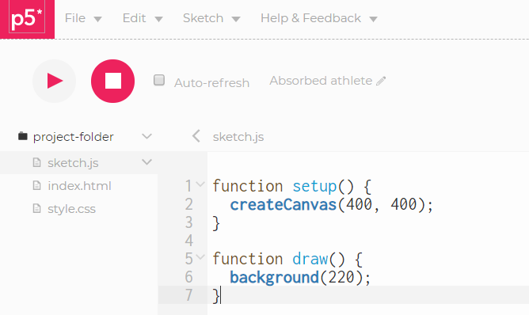
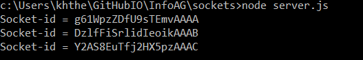

Javascript läuft im Browser. Node ist ein Programm, welches die Javascript-Engine aus Chrome benutzt, um Javascript-Code außerhalb des Browsers laufen zu lassen (= Javascript auf einem Server).
Wenn Node installiert ist, können wir es als Programm aufrufen und Javascript-Befehle eingeben wie in der Chrome-Konsole. Mit Strg-C beenden wir ein Node-Programm.
In der Kommandozeile in unserem Arbeitsordner rufen wir npm init auf und machen verschiedene Eingaben.

In der Kommandozeile rufen wir npm install express --save auf.

In unserem Arbeitsordner Wir erstellen ein File server.js und einen Unterordner public.
// server.js
let express = require('express');
let app = express();
let server = app.listen(3000);
app.use(express.static('public'));
In den Unterordner public übernehmen wir die drei Files index.html, sketch.js, style.css aus einem neuen Sketch des P5JS-Webeditors. In sketch.js schreiben wir unseren Sketch. In der Kommandozeile rufen wir node server.js auf. Im Browser können wir mit localhost:3000 unseren Sketch sehen.
In der Kommandozeile rufen wir npm install socket.io --save auf.
Wir erweitern unser File server.js.
let express = require('express');
let app = express();
let server = app.listen(3000);
app.use(express.static('public'));
let socket = require('socket.io');
let io = socket(server);
io.sockets.on('connection', newConnection);
function newConnection(socket) {
console.log('Socket-id = ' + socket.id);
}
In unserem Sketch verbinden wir uns mit dem Server
let socket;
function setup() {
createCanvas(400, 400);
socket = io.connect('http://localhost:3000');
}
function draw() {
ellipse(mouseX,mouseY,30,30);
}
Wenn wir unser localhost-Fenster mehrmals duplizieren, sehen wir die Verbindungen in der Konsole.
